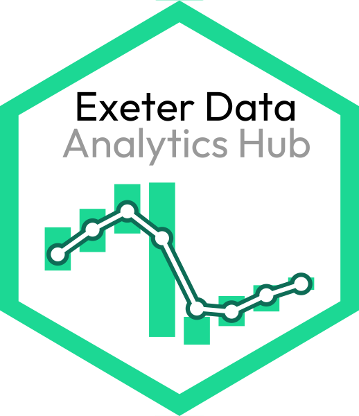

Open and Reproducible Science
ExMove toolkit

Alongside Liam Langley, Stephen Lang, & Luke Ozsanlav-Harris, we have created a toolkit for processing biologging data from tag downloads to online archive. Read the open access publication at Journal of Animal Ecology: Langley et al 2024. All resources and code can be accessed via the ExMove website and GitHub repository.
Exeter Data Analytics Hub

I am part of a team of Early Career Researchers promoting open and reproducible data science at the University of Exeter’s penryn campus by delivering monthly workshops and talks, and sharing reproducible coding resources. Find upcoming and previous talks, alongside useful introductions and walkthroughs on common research programming activities, on the ExeDataHub website.
Data
Bertarelli Programme in Marine Science data
Data collected within our BPMS Seabird Connectivity project will all be archived or linked to within the project Harvard Dataverse page
Seabird Tracking Data
I am always keen to collaborate on projects maximising existing seabird tracking data. Tracking data that I have helped to collect/process can be requested through the Seabird Tracking Database:
R Code
Find the code for this website and my previous projects via my GitHub page